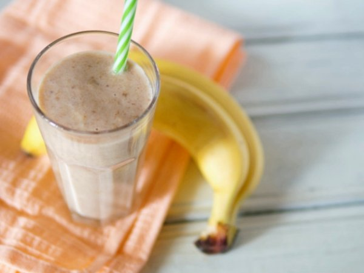

-Banana 1 y ½
-Leche de almendras 1 a 2 tazas
-Azúcar
Utensilios:Licuadiora
En un bowl colocamos el huevo, el azúcar, aceite y el agua, batimos con la batidora.
Luego de unos minutos le agregamos la harina, el polvo de hornear, la manzana rallada y la ralladura de limón o naranja y mezclamos por unos minutos.
